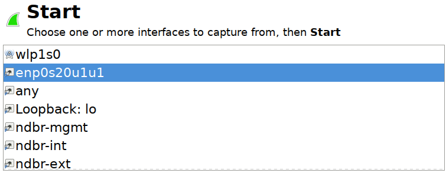
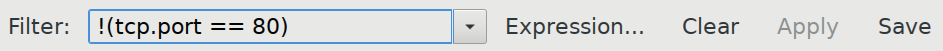
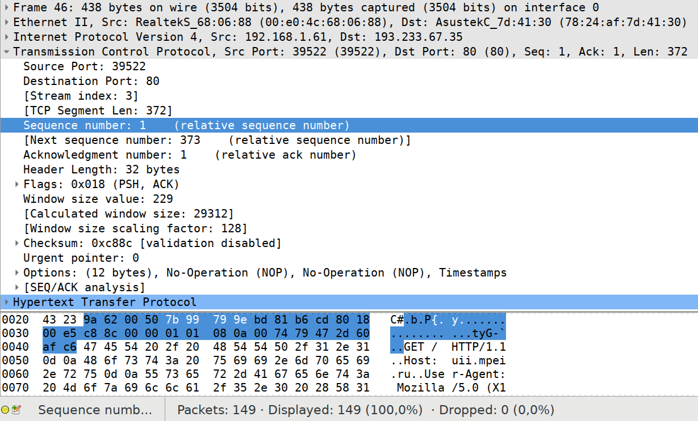
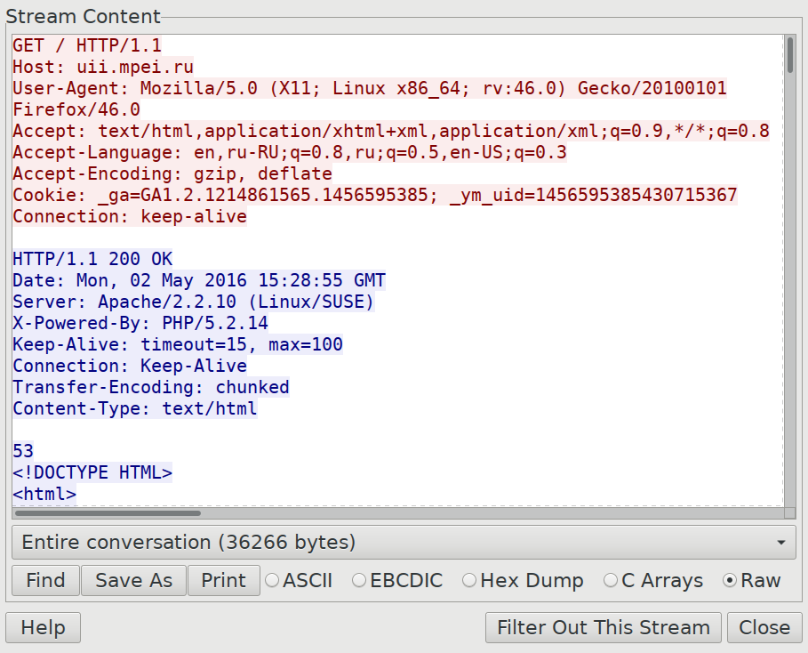
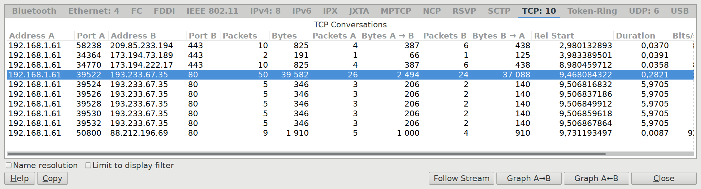

Программа Wireshark предназначена для захвата, записи и анализа сетевого трафика, то есть является сниффером (sniffer) и анализатором. Wireshark позволяет:
Ядром Wireshark служит библиотека libpcap или её версия для ОС Windows — WinPCap. Эти библиотеки, Wireshark и сопутствующие программы разрабатываются
в плотном взаимодействии. Все они бесплатны и кроссплатформенны, код открыт.
Wireshark перехватывает входящие пакеты, которые драйвер передает ОС, и исходящие пакеты, которые ОС передает драйверу. Следовательно, если сетевая карта преобразует или отбрасывает некоторые пакеты, это не отражается в Wireshark.
Перед захватом трафика необходимо выбрать сетевые интерфейсы, пакеты с которых будут захвачены:

В дальнейшем можно выбрать другие интерфейсы, нажав кнопку List the available capture interfaces .
Захват начинается по нажатию кнопки Start и прекращается нажатием кнопки Stop .
Предупреждение. При большом количестве и скорости поступления пакетов Wireshark работает медленно. Нужно либо во время захвата свести к минимуму сетевую активность, кроме интересующей, либо выставить перед захватом фильтр захватываемых пакетов (см. ниже). Поэтому же не рекомендуется продолжать захват после того, как нужные пакеты получены, или просто долгое время.
По окончании захвата трафика пакеты можно сохранить в файл. Стандартным
форматом является pcap (packet capture); в профессиональном арго такие файлы
называются «пикапами». Новый формат pcapng (next generation) сохраняет время
точнее и предназначен для быстрых потоков данных.
Сохраненные файлы можно открыть в Wireshark и полноценно анализировать пакеты. На сайте Wireshark доступна коллекция образцов трафика.
Не всегда можно запустить Wireshark на машине, где требуется захватить трафик.
Программа tcpdump позволяет сделать это из терминала, например, по SSH:
tcpdump -i eth0 -w record.pcap
Ключ -i позволяет выбрать сетевой интерфейс, ключ -w — файл, в который
будет записан трафик для последующего анализа. Если не указывать -w, сведения
о перехваченных пакетах будут печататься на экране. Захват трафика доступен
только привилегированному пользователю.
Перемещаться между пакетами удобнее всего с клавиатуры (см. меню Go).
Можно переходить к следующему (Ctrl+.) или к предыдущему (Ctrl+,)
пакету в сеансе (conversation), что удобно, если перехвачено несколько
одновременных сеансов TCP, и анализируется лишь один из них.
По умолчанию Wireshark разрешает числовые адреса в символьные имена. Например, вместо порта 80 отображается HTTP, вместо адресов — имена машин. Зачастую это неудобно и отключается флажками в подменю View > Name Resolution.
Диалог Column Preferences… в контекстном меню заголовка любого столбца позволяет настроить перечень отображаемых столбцов. Быстро скрывать столбцы можно из меню View > Displayed Columns.
Список можно упорядочить по любому столбцу. По умолчанию пакеты располагаются в порядке захвата, то есть по времени (или как были записаны в файле). В некоторых случаях, в частности, при захвате с нескольких интерфейсов сразу или при сообщении программ на одной машине, порядок может быть наружен. Поэтому рекомендуется после захвата упорядочить пакеты по времени вручную.
Помимо сохранения пакетов, Wireshark позволяет также экспортировать:
Сводку (содержимое списка) как текст: File > Export Specified Packets…
Можно выгрузить не все пакеты, а только выделенный (selected), отмеченные
(marked) или только отфильтрованные (
Результаты разбора пакета (область под списком) как текст: File > Export Packet Dissections… > As «Plain Text» file…
Данные, передаваемые по некоторым протоколам, например, файлы, загруженные по FTP или HTTP: File > Export Objects > [протокол].
Wireshark позволяет отбирать интересующие пакеты по условиям — фильтрам. Фильтры захвата (capture filters) отбирают пакеты, которые будут захвачены, а фильтры отображения (display filters) позволяют скрывать пакеты, не прошедшие фильтр. Здесь и далее обсуждаются фильтры отображения. В строке состояния внизу окна показывается общее и отображаемое число пакетов.

ip.addr == 192.168.1.101 — пакеты с заданным адресом отправителя
или получателя;eth.dst == ff:ff:ff:ff:ff:ff — широковещательные кадры;tcp.dstport == 80 — сегменты TCP на порт 80.Условия могут группироваться скобками и объединяться логически:
(ip.srcaddr == 10.0.0.1 ) && (udp.srcport == 1234) — дейтаграммы UDP
от !(ip.addr == 192.168.1.1 ) — пакеты от любого узла, кроме заданного.Во время ввода работает автодополнение: если ввести ip., в выпадающем списке
появится перечень свойств протокола IP, по которым можно отобрать пакеты.
По нажатию на кнопку Expressions… открывается диалог, где компоненты фильтра
можно выбрать из перечня с пояснениями. Если выражение корректно, оно
подсвечивается зеленым, если некорректно — красным.
Фильтр применяется по нажатию Enter или кнопки Apply.
Предупреждение. Есть ряд неочевидных особенностей фильтрации. Выражение
tcp.port == 80 означает «протокол TCP и порт отправителя или получателя
равен 80», то есть эквивалентно (tcp.dstport == 80) || (tcp.srcport == 80).
Выражение tcp.port != 80 не означает «сегменты TCP через любые порты,
кроме 80», а эквивалентен (tcp.dstport != 80) || (tcp.srcport != 80), то есть
отбирает пакеты, у которых хотя бы один порт не 80. Правильным отрицанием
исходного фильтра является !(tcp.port == 80).
Полное и подробное руководство по составлению фильтров с примерам и объяснениями доступно на сайте Wireshark.
Результаты разбора (dissection) выбранного пакета отображаются под их списком и сгруппированы по протоколам разных уровней. На каждом уровне отображаются поля заголовков PDU, а также дополнительная полезная информация. Например, для TCP отображается номер последовательности (поле sequence number) и длина данных в сегменте, которая не записана в заголовке, а вычисляется.
Примечание. Можно значительно ускорить работу Wireshark, отключив разбор и анализ протоколов, которые заведомо не интересуют, в диалоге Analyze > Enabled Protocols…
Ниже результатов разбора отображаются байты пакета в шестнадцатеричном и текстовом виде. При выборе поля пакета в результатах разбора соответствующие байты подсвечиваются, и наоборот, при выборе байта происходит переход к полю, которое он (частично) представляет.

Через контекстное меню выбранного поля или целого PDU (уровня) можно копировать
соответствующую часть PDU как шестнадцатеричное представление байт (14ef88,
Copy > Bytes > Hex Stream) или печатный текст, содержащийся в ней (Copy >
Bytes > Printable Text Only).
В контекстном меню пакета в их списке пункт Colorize Conversation позволяет подсветить сеанс, к которому относится пакет. Это работает не только для TCP, но и для IP и других протоколов, где сеанс можно выделить условно. Пункт Conversation Filter позволяет отфильтровать только пакеты данного сеанса.
Пункт Follow TCP Stream восстанавливает потоки, «диалог» участников сеанса TCP в виде текста.

Через диалог Statistics > Conversations можно быстро просмотреть список сеансов и перейти к любому из них.

При анализе TCP важны номера последовательности и подтверждения (sequence number и acknowledgement number), а также флаги (flags) сегмента. Поскольку разности между номерами важнее их абсолютных значений, Wireshark отображает относительные номера, то есть за вычетом начальных значений. В результате видно, как будто в каждом сеансе номера начинают расти с нуля, а не с произвольного значения. Можно отключить этот режим, сняв флажок Protocols > TCP > Relative sequence numbers в диалоге Edit > Preferences.
libpcap и WinPCapБиблиотеку libpcap (в ОС семейства *nix) или WinPCap (в ОС Windows) можно
использовать в своих программах, чтобы перехватывать пакеты без Wireshark
или tcpdump. При этом доступна фильтрация захватываемых пакетов, запись
и считывание файлов *.pcap., но недоступен продвинутый анализ протоколов.
libpcap и их альтернативыУпомянутая tcpdump доступна в большинстве ОС семейства *nix. Возможности
по обработке трафика в ней ограничены, её задача — захват пакетов.
Программа tshark является текстовой версий Wireshark. Её использование
подобно tcpdump, но пакеты анализируются с использованием всех
интеллектуальных алгоритмов, заложенных в Wireshark.
Утилита tcpreplay позволяет проигрывать файлы *.pcap, то есть посылать
в сеть содержащиеся в них пакеты.
Инструмент Microsoft Message Analyzer является
аналогом Wireshark для ОС Windows, созданным относительно недавно.
Его возможности по захвату и анализу сетевого трафика ограничены
по сравнению с WinPCap, однако есть возможность захватывать и
анализировать сообщения, передаваемые по служебным каналам Windows.
Большой список инструментов имеется на сайте Wireshark.
За рамки дисциплины выходит ряд мощных возможностей Wireshark:
libpcap, которые могут
обрабатывать PDU протоколов, не встроенных в библиотеку.Ядро Wireshark, библиотека libpcap, в ОС Windows не способна перехватывать
пакеты, передаваемые между интерфейсами одной машины. Простейшее решение — вынудить ОС прокладывать маршрут для таких пакетов через другую машину; подходит
шлюз по умолчанию. В ОС семейства *nix проблема отсутствует.
Внешний адрес машины (ipconfig
или в диалоге свойств сетевого подключения.
Проложить маршрут, действующий до перезагрузки, можно следующей командой:
route add свой-IP mask 255.255.255.255 IP-шлюза metric 1
Например, если локальный адрес
route add 192.168.1.1 mask 255.255.255.255 192.168.1.1 metric 1
Изменение таблицы маршрутизации разрешено только администратору. В Windows 7 и более поздних версиях запуск командной строки администратора доступен из GUI.
По окончании экспериментов следует удалить этот неоптимальный, вредный маршрут:
route delete свой-IP IP-шлюза
Козлюк Д. А. для кафедры Управления и информатики НИУ «МЭИ», 2016 г.